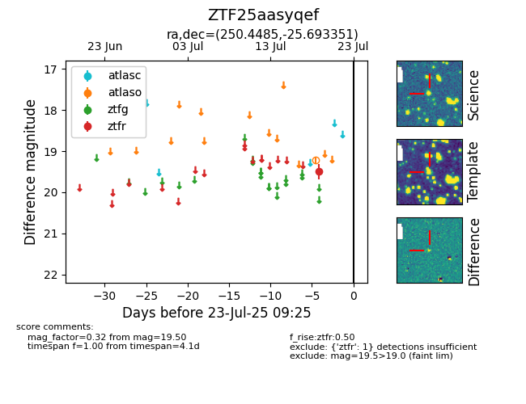

Target ZTF25aasyqef at 2025-07-23 11:52, see:
FINK: fink-portal.org/ZTF25aasyqef
Lasair: lasair-ztf.lsst.ac.uk/objects/ZTF25aasyqef
ALeRCE: alerce.online/object/ZTF25aasyqef
alt names
ZTF25aasyqef (ztf,fink)
coordinates:
equatorial (ra, dec) = (250.4485,-25.69335)
galactic (l, b) = (354.3874,+13.42460)
photometry
last ztfr=19.50
1 ztfr detections
